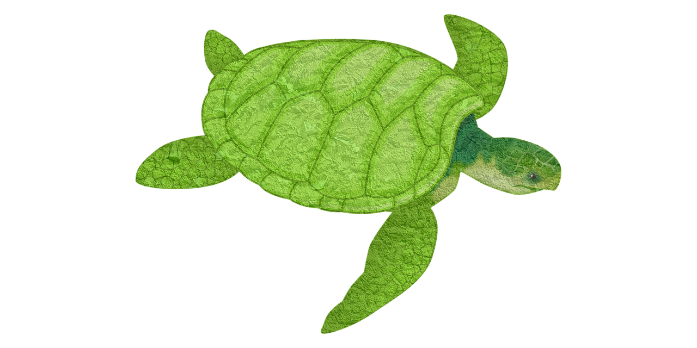

Fundamentos do CSS
O CSS ou Cascading Style sheets ou folha de estilo em cascata, é utilizado para adicionar
estilos em uma página da web, ele determina como os elementos e o layout da página devem ser exibidos no
navegador.
Ele foi criado em 1994 pelo Hako Wium Lie com o objetivo de facilitar a programação dos sites. O CSS muitas
vezes é considerado uma linguagem de marcação ou até mesmo uma linguagem de programação, mas ele não é
nenhuma
das duas.
O CSS é considerado uma linguagem de estilo, com ele podemos criar muitas coisas como os layouts, animações,
páginas web, contadores e muito mais, para fazer tudo isso ele deve possuir propriedades e seus valores.
As propriedades são características de um elemento do HTML, como a largura, altura e cor, etc, já os valores
é a
definição do resultado da propriedade e como ele deve ser exibido no navegador.
Sintase CSS
A sintaxe do CSS consiste em seletor, propriedade e valor. O seletor é usado para selecionar os elementos
HTML aos quais você deseja aplicar estilos. A propriedade define qual característica do elemento você deseja
estilizar, e o valor especifica como essa característica deve ser estilizada.
Formas de declaração do CSS
Existem três formas de declarar o CSS, são elas: CSS Inline, CSS interno e CSS externo.
- CSS Inline: Adicionamos o código CSS utilizando o atributo style dentro das tags HTML, elemento por
elemento.
- CSS Interno: O código CSS é adicionado dentro da tag head da página HTML, dentro da tag head adicionamos
outra tag a style e lá colocamos as regras CSS.
- CSS Externo: É criado um arquivo com a extensão .css, com todas as regras CSS da nossa página e esse
arquivo
será referenciado na nossa página HTML com a tag link dentro da tag head.
Seletores do CSS
Os seletores determinam em quais elementos vamos adicionar as propriedades e valores CSS, existem vários
tipos de
seletores e vamos abordá-los aqui, então vamos lá:
- Seletor de tag: É conhecido como seletor de tipos, ele busca elementos por uma tag HTML específica.
- Seletor ID(#): Busca elementos através do atributo "id".
- Seletor por classe(.): Busca elementos através do atributo "class".
- Seletor universal(*): Seleciona todos os elementos HTML.
- Seletor de atributo ([atrib]): Seleciona elementos que possuem um atributo específico em nosso documento
HTML e conseguimos também buscar atributos com um valor específico.
Podemos aplicar as regras CSS para agrupar vários seletores diferentes basta separar os elementos por uma
vírgula, fazendo isso evitamos copiar e colar os mesmos códigos já feitos, reutilizando as mesmas regras.
Os combinadores
Ele especifica qual o tipo de relação entre os seletores, entre dois id, entre duas classes ou entre dois
parágrafos.
- Combinador descendentes(espaço): existem os combinadores descendentes, ele é utilizado para aplicar
propriedades
CSS somente
em elementos que são descendentes de outros elementos específicos, buscamos o seletor que é filho de
outro
seletor. Para entender melhor vamos explicar os combinadores.
- Combinador filho(>): Seleciona os filhos imediatos, que é um filho direto do elemento, que está
especificado
a esquerda;
- Combinador irmão adjacente(+): É utilizado para selecionar um elemento que está diretamente depois do
seletor
que é definido na esquerda;
- Combinador irmão em geral (~): Ele pode ser usado em irmãos, não sendo necessariamente diretos ou
indiretos
dos elementos;
Altura e Largura
Logo após inserirmos o valor das propriedades precisamos passar a unidade de medida, para isso podemos usar,
cm,
px, % e pontos. Temos algumas palavras chaves que podemos utilizar, a palavra auto vai determinar uma altura
ou
largura automática se utilizada nessas propriedades, como em outras propriedades. A palavra Initial aplica a
propriedade que tem como padrão, que seria o valor inicial.
Propriedade altura(height);
Propriedade largura(width);
Margin
Propriedade que cria um espaçamento ao redor dos elementos que é aplicado por fora, podemos definir as
margens
com propriedades individuais para cada do elemento ou utilizar uma propriedade apenas, na margem podemos
utilizar formas de expressar o valor em cm, px, % entre outros. Quando utilizamos apenas a palavra margin e
atribuímos um valor apenas, automaticamente esse valor será adicionado aos lados do elemento, se
adicionarmos
dois valores, o primeiro valor será adicionado ao topo e abaixo do elemento, o segundo valor será adicionado
aos
lados: esquerda e direita.
No caso de três valores adicionados, o primeiro valor será aplicado no topo do elemento, o segundo valor será
para
as laterais e o último valor será abaixo do elemento. Quando temos quatro valores, cada um deles é
adicionado a
um lado do elemento, a forma mais simples de decorar a ordem dos valores é lembrar de seguir o sentido
horário.
Através da margem também podemos aplicar valores negativos.
- Margin-top: Margem do top do elemento.
- Margin-bottom: Margem abaixo do elemento.
- Margin-left: Margem a esquerda do elemento.
- Margin-right: Margem a direita do elemento.
Padding
Responsável por aplicar espaçamento interno nos elementos, ele funciona igual a margem mas de forma
diferente, a
ordem de aplicação e valores negativos para quantidades de valores diferentes também é igual.
- Padding-top: Margem do top do elemento.
- Padding-bottom: Margem abaixo do elemento.
- Padding-left: Margem a esquerda do elemento.
- Padding-right: Margem a direita do elemento.
Box Sizing
A propriedade box-sizing aceita dois valores que são: content-box, que soma o valor do padding e a largura
do
elemento que definimos, o segundo valor é o border-box redimensiona o conteúdo do nosso elemento, somando as
bordas desse elemento.
Formas de definir as cores
Podemos definir as cores por uma variedade de opções: cores pré-definidas, palavra-chave "currentcolor",
hexadecimal, hexadecimal com transparência, RGB, RGBA, HSL, HSLA.
- Cores pré-definidas
- Palavra-chave "currentcolor"
- Hexadecimal
- Hexadecimal com transparência
- RGB
- RGBA
- HSL
- HSLA
Box model
O modelo de caixa (box model) em CSS é uma representação fundamental que descreve como os elementos HTML são
renderizados na página web. Ele consiste em quatro componentes principais: conteúdo (content), preenchimento
(padding), borda (border) e margem (margin).
Conteúdo (Content): É a área dentro do elemento que contém o conteúdo real, como texto, imagens, vídeos,
etc.
A largura e altura do elemento são definidas pelo tamanho do conteúdo, juntamente com o preenchimento, borda
e margem.
Preenchimento (Padding): É a área transparente ao redor do conteúdo, dentro da borda do elemento. O
preenchimento é usado para criar espaço entre o conteúdo e a borda. Ele pode ser especificado
individualmente para cada lado do elemento (top, right, bottom, left), ou de uma vez usando a propriedade
padding.
Borda (Border): É a linha que envolve o conteúdo e o preenchimento do elemento. Ela é usada para definir o
limite físico do elemento e pode ter diferentes estilos, cores e espessuras. A borda é definida pela
propriedade border.
Margem (Margin): É a área transparente fora da borda do elemento. A margem é usada para criar espaço entre
os
elementos vizinhos na página. Assim como o preenchimento, a margem pode ser especificada individualmente
para cada lado do elemento ou de uma vez usando a propriedade margin.
Conhecimentos neessários sobre CSS
- Seletores CSS:
- São padrões usados para selecionar e estilizar elementos HTML em uma página. Existem vários tipos de seletores, incluindo seletores de elementos (como p para parágrafos), seletores de classe (como .classe), seletores de ID (como #id), seletores descendentes (como div p para selecionar todos os parágrafos dentro de divs), seletores de atributos (como [type="text"] para selecionar elementos com determinado atributo), entre outros.
- Propriedades CSS:
- São características que podem ser aplicadas a elementos HTML para definir sua aparência e comportamento. As propriedades CSS comuns incluem cor, fonte, tamanho, margem, preenchimento, borda, posicionamento, exibição, entre outras.
- Modelo de Caixa (Box Model):
- É um conceito que descreve como os elementos HTML são representados visualmente na página. Ele consiste em quatro partes: conteúdo (o próprio conteúdo do elemento), preenchimento (espaço entre o conteúdo e a borda), borda (limite do elemento) e margem (espaço entre o elemento e outros elementos vizinhos).
- Posicionamento:
- Refere-se à forma como os elementos são posicionados na página. Existem quatro tipos principais de posicionamento em CSS: estático (o padrão), relativo (posicionamento em relação à posição original), absoluto (posicionamento em relação ao elemento pai) e fixo (posicionamento em relação à janela de visualização).
- Flexbox e Grid:
- São técnicas de layout em CSS que permitem criar layouts responsivos e flexíveis. O Flexbox é mais adequado para layouts unidimensionais, enquanto o Grid é ideal para layouts bidimensionais. Ambos oferecem controle preciso sobre o posicionamento e o dimensionamento dos elementos.
- Media Queries:
- São regras em CSS que permitem aplicar estilos diferentes com base nas características do dispositivo, como largura da tela, orientação e resolução. Elas são usadas para criar designs responsivos que se ajustam automaticamente a diferentes tamanhos de tela e dispositivos.
- Animações e Transições:
- São recursos do CSS que permitem adicionar movimento e interatividade aos elementos HTML. As transições suavizam as mudanças de estilo ao longo do tempo, enquanto as animações permitem criar efeitos mais complexos com controle total sobre o tempo e a trajetória da animação.
- Transformações:
- São propriedades do CSS que permitem aplicar efeitos de transformação, como rotação, escala, translação e inclinação, aos elementos HTML. Elas são úteis para criar efeitos visuais interessantes e modificar a aparência dos elementos de forma dinâmica.
- Tipografia:
- Refere-se ao estilo e formatação do texto em uma página web. As propriedades CSS relacionadas à tipografia incluem font-family (família de fontes), font-size (tamanho da fonte), font-weight (espessura da fonte), line-height (altura da linha) e text-align (alinhamento do texto).
- Pseudoclasses e Pseudoelementos:
- São seletores especiais em CSS que permitem estilizar elementos com base em estados ou características específicas. As pseudoclasses, como :hover e :active, são usadas para estilizar elementos em resposta a interações do usuário, enquanto os pseudoelementos, como ::before e ::after, são usados para adicionar conteúdo extra a elementos HTML.
- Preprocessadores CSS:
- São ferramentas que estendem a sintaxe padrão do CSS, permitindo recursos como variáveis, mixins, aninhamento e herança. Exemplos comuns de preprocessadores CSS incluem Sass e Less, que ajudam a tornar o código CSS mais modular, reutilizável e fácil de manter.
- Boas Práticas:
- Refere-se às diretrizes recomendadas para escrever código CSS de alta qualidade e fácil manutenção. Isso inclui práticas como organização de código, nomeação de classes significativas, modularidade, consistência no estilo, otimização de desempenho e garantia de compatibilidade entre navegadores. Seguir boas práticas ajuda a criar código CSS mais limpo, eficiente e escalável.
Exempolo de css
Exemplo de animação com CSS

Exemplo de um título
Título de exemplo
Exemplo de edição de imagem e posicionamento